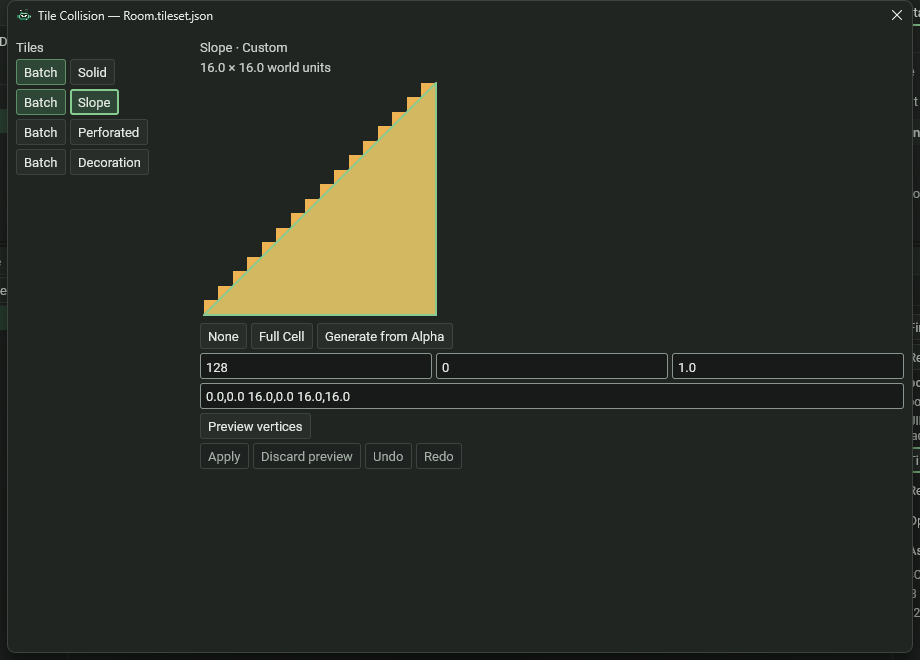

Tilemaps
Use native tile layers for editable project tilemaps. The Tilemap Room walkthrough provides the image, tileset, scene and project used below.
Open or build a room
Tilemap Room
Open examples/tilemap_room/Room.sleproject, then Room.scene.json from Assets. The room has solid, sloped and perforated terrain and a separate decoration layer. Use Play to see the startup camera’s view.
Add grid regions
Import Room.png, set Texture filter to Nearest and open the spritesheet dialog. In Grid mode enter cell size 16 × 16, margins 0 × 0 and spacing 0 × 0. Add grid regions creates Slice 1–4, in order Solid, Slope, Perforated and Decoration.
Save region
For a single custom slice, select its pixel bounds in the spritesheet dialog and use Save region. Use the saved region ID to reference it from a sprite or tileset entry.
Tile layer loading
For a fresh project, copy Room.tileset.json into Assets. Set spritesheet to project-asset:// plus the imported image UUID and replace each region with the corresponding slice UUID. Keep tile IDs stable and refresh Assets. The native scene schema explains layer order, chunks and cells.
Tile Palette
In an editable project scene, click Tile Palette in the Scene toolbar. Choose a tileset and a tile in the Tile Palette. The palette also controls layer selection, paint mode and clipboard operations.

Tiles Tool
Use Tools → Tiles Tool or press T with Scene or Hierarchy focused in an editable project scene. Click Tile Palette in the Scene toolbar to access the palette and layers.
Tile layers
Choose the imported tileset and click Add Tile Layer. Paint terrain on one layer and add a second layer for decoration with Collision cleared. Use the visibility and lock controls to hide or protect a layer, and use Move Up or Move Down to change draw order.
Paint and edit
Tile Brush
With the Tiles tool active and Scene focused, press 1 or choose Brush. Click or drag on an editable layer with a tile or stamp selected.
Tile Erase
Press 2 or choose Erase. Drag across cells on the active editable layer to clear them.
Tile Rectangle
Press 3 or choose Rectangle. Drag across a rectangle to paint it with the selected tile.
Tile Eyedropper
Press 4 or choose Eyedropper. Click a painted cell to pick its tile from the active layer.
Tile Fill
Press 5 or choose Fill. Click a cell to replace connected matching cells within the active selection or layer bounds. Select a finite area before filling empty cells.
Tile Select
Press 6 or choose Select. Drag a rectangle to select cells on the active layer. Drag from inside the selection to move its tiles.
Copy Tiles
With a selection on the active layer, click Copy in the palette or use Ctrl+C in the focused Scene viewport to capture the selected pattern for pasting or stamping.
Paste Tiles
With a copied pattern and a compatible, visible, unlocked layer, click Paste in the palette or use Ctrl+V in Scene. Point at the destination cell before pasting. If the cursor has no cell, paste uses the active selection’s minimum cell.
Search tiles
Enter part of a tile name in the Tile Palette to narrow the tiles shown for the current layer.
Build Stamp
Enable Build Stamp and click up to eight palette tiles in left-to-right order. Brush paints the resulting row as a pattern.
Use Copied Stamp
Copy a selection with painted cells and click Use Copied Stamp on a layer using the same tileset. Brush paints the copied pattern.
Clear Selection
Click Clear Selection in the palette to dismiss the active layer’s cell selection.
Save, reopen, and export a tile scene
Undo and redo a stroke, save the scene and reopen it to check the cells and layers. Set the startup scene and frame the terrain with its gameplay camera. Use Play to test it, then export the project. Move the entire delivery folder and launch it from a different working directory.
Collision authoring and runtime
Tile Collision…
Select the tileset in Assets and choose Tile Collision…. Pick the tile to edit. Changes are staged in the dialog until Apply.

None
Choose None for Decoration so that this tile contributes no fixtures.
Full Cell
Choose Full Cell for Solid to fill the tile’s full cell with collision.
Generate from Alpha
Select Perforated, choose Generate from Alpha, set threshold 128 and simplification 0, and inspect the opening in the preview. For Slope, compare the generated stepped outline with the example’s smooth triangular collider.
Preview vertices
Inspect Preview vertices and adjust the staged shape before applying. Keep the intended opening or slope visible in the preview.
Apply
Click Apply after checking the preview. The staged geometry is saved to the tileset asset.
Discard preview
Use Discard preview to clear the uncommitted vertex preview.
Collision Undo
Use Undo inside Tile Collision… to reverse a staged collision edit. Scene strokes have their own undo history.
Collision Redo
Use Redo inside Tile Collision… to restore a staged collision edit after Undo.
Tile collision generation
Enable Collision on the terrain tile layer. At runtime the collision system generates static fixtures for active terrain chunks, merging full-cell runs into rectangles. Add a dynamic body above the floor or slope and use Play to observe it land. Check a perforation with a body small enough to fit. Enable the runtime fixture overlay from Lua with Engine.Physics.setDebugEnabled(true) to see the generated outlines.
Tiled map loading
For authored Tiled data, use the scene’s tiledMap configuration. The chunks guide describes the runtime Tiled and chunk workflow. Use the native Tile Palette for the project layer workflow described above.